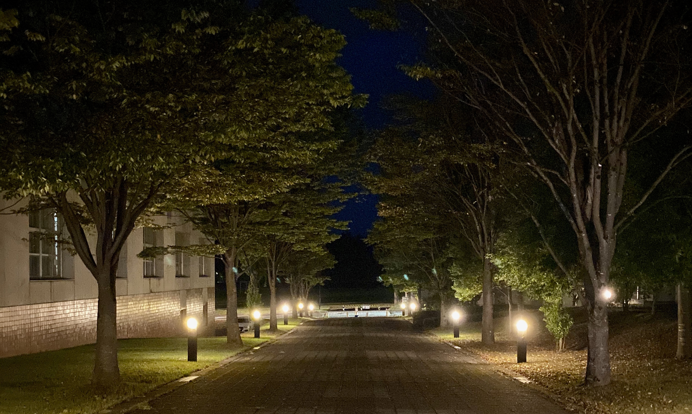

Aizu
Aizu
Astronomy
Club
-----------------------------------------------------------------
天文部では、ゆる〜く天体観測をしようと思います。研究棟屋上に設置されている望遠鏡を用いたり、会津各地の星が見やすい場所に移動するつもりです。また、メンバーの仲を深めるためのイベント(新歓やBBQ等)もしたいと思っています。
-----------------------------------------------------------------
天文部の活動として、遠征(旅行)にも行く予定です。まだ場所は未定ですが、長野県に行きたいという意見が多いので部員で話し合った上で場所を決めようと思います。